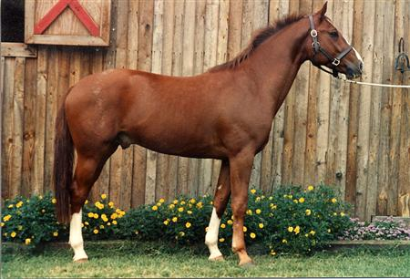
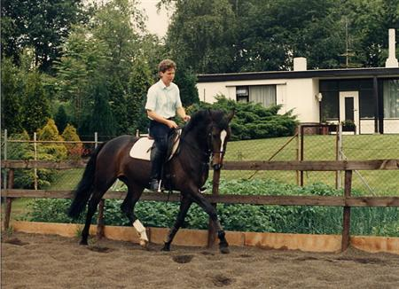
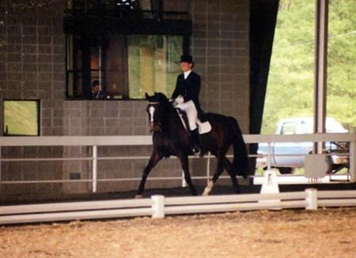
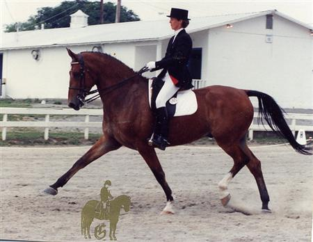
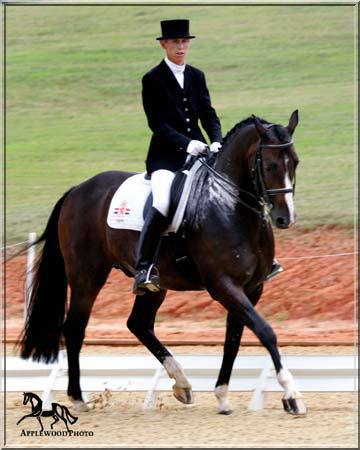
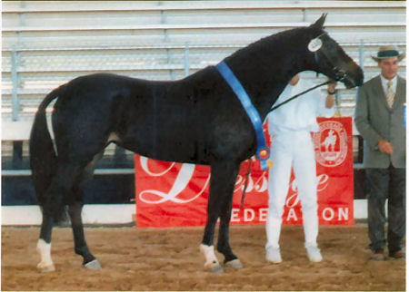
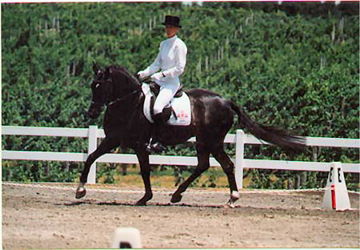
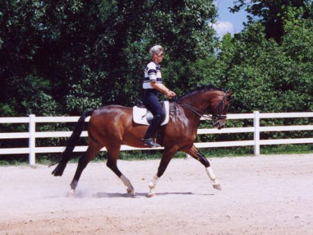
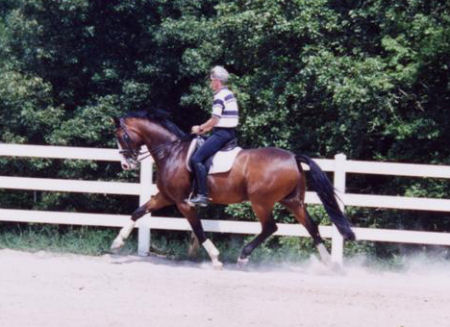

After training horses professionally in the Netherlands for nine years,
Anke Boersma moved to the US in 1989.
Please take a look at this overview of some of the horses imported since then.
Competition levels mentioned here, are while the horse was trained and shown
by Anke Boersma.
Veritas
1985 Chestnut, 16.2 hands, KWPN gelding
Pedigree: Veritas x Thijs x Balthazar
Competed at First Level in 1989 (in Holland)
Sold to Mark Rijpens, Alpharetta, GA
The sale of this gelding to the US, made the connections in Georgia, which led
to the move to the US for Anke Boersma.

Waldine/Giselle
1980 Dark Bay, 15.3 hands, "Star" rated KWPN mare
Pedigree: Rechter x Marinier x Erathostenos
Competed at FEI Level in 1992
Sold to Laurie Milks, CA


Zadar
1981, Bay, 16.3 hands, KWPN gelding
Pedigree: Kommandeur x Marlando
Competed at FEI in 1990
Sold to Lisa Dewey, Huntsville, AL

Claire
1984 Liver Chestnut, 17.2 hands, "Star" rated KWPN mare
1993 Dark Bay, 16.2 hands, "Star" rated KWPN gelding
Pedigree: Zortin x Julio Mariner x Natural
Currently competing at FEI level
Sold to Nancy Chalmer, Ellijay, GA
Ludo received a Top Ten certificate at the 1999 NA/WPN (American department of
the Dutch Warmblood/KWPN studbook) inspection tour. He was the eigth highest
scoring gelding in the country, for conformation and movement.

Minerva
1994 Dark Bay, 16.1 hands, "Star" rated KWPN mare
Pedigree: Hemmingway x Farn x Xebec
Competed Second level in 1999
Sold Elizabeth Lynn, Fairburn, GA
Minerva was the winner of the first ever "Gert vander Veen Award" for the
top horse in the country, at the 1999 NA/WPN inspection tour. She also received a
top ten award in 1996.


Magastrono
1994, Bay, 16.3 hands, KWPN gelding
Pedigree: Larno x Zortin x Sultan
Competed at Third Level in 2001
Sold to Amanda Pennel, Marietta, GA
Magastrono won multiple High Score Awards at Open Shows, in First, Second and Third level.


Ronald
1998 Bay, 16.2 hands, "Star" rated KWPN gelding
Pedigree: Inspekteur x Akteur x Waldo
Competed in Second level in 2003
Sold to Jennie Hollis, Alpharetta, GA
Ronald placed second for conformation and fifth for movement at the 2004 NA/WPN
inspection tour. He also received a Top Ten Award for free-jumping.